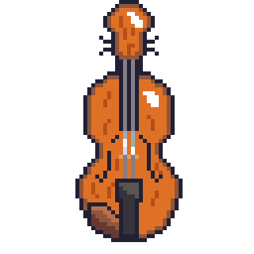
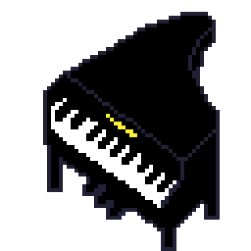

There are many different styles of playing String Instruments. There are plucking, strumming, bow and possibly
even more!
Click on the Instrument cards for more details!

Violin
A beautiful string instrument with four strings, played with a bow.

Piano
A keyboard instrument with 88 keys, perfect for melodies and harmonies.
Harp
An elegant string instrument played by plucking the strings with fingers.
String Instruments around the world
There are thousands of String Instruments from around the world.
Click on Countries on the world map to find out what Instruments originally from there!
History and Culture of String Instruments
String Instruments have been around for thousands of years and has been a crucial symbol for Cultures. Find out
with the Timeline!
Uses and genres around the world
String Instruments are widely used around the world with various playing styles and genres.
In fact, most do! Some Common Genres include:
Classical
Pop
Folk
Jazz
And even more!
How Do String Instruments Work?
How do you play string Instruments?
There are many different styles of playing String Instruments. There are plucking, strumming, bow and possibly
even more! However, they all use string Vibrations to create sound and the body amplifies the sound.
Click The Buttons for the Sound of a Violin!
Electric vs Acoustic
Acoustic instruments are genrally made of wood as it can deflect sound well to amplify the sound.
However, Electric Instruments have very interesting styles,
some even don't even have a body like an Electric Violin!
This is because they can amplify sound using an amp!
String Instruments are generally tuned to a certain pitch (Hz).
Instruments like the Violin, Viola, Cello and Double Bass are tuned in Fifths whereas a guitar is tuned in
forths.
However, all Instruments are tuned to the 'A' note because all instruments have an A. Consequently, Viola, Cello and
Double
Bass have a C String whereas Violin does not.
How String Instruments Are Made
Wood selection, shaping, fitting, and stringing — from raw material to music!
Materials used to make the instrument
Wood (For body, neck and fingerboard)
Spruce
Maple
Ebony
Rosewood
Metal (For strings, tailpieces and fine tuners)
Steel
Nickel
Bronze
Animal Products
Horsehair (For bows)
Gut strings (Rarely used now)
Glue
Synthetic Materials
Plastic
Carbon fiber (Carbon fiber bows)
Nylon (Some strings)
Different types of materials
Material
Cost Estimate (SGD)
Notes
Spruce (tonewood)
$12.80-$128.00+
Top plate; higher grade for better sound
Maple (tonewood)
$25.60-$256.00+
Used for back, sides, neck
Ebony
$25.60-$128.00
Dense hardwood, high durability
Horsehair (for bows)
$6.40-$38.40
Mongolian hair is most used
Gut strings
$25.60-$102.40 per set
More expensive, sensitive to humidity
Steel/Nylon strings
$12.80-$76.80 per set
More stable and affordable
Carbon fiber (bows or bodies)
$64.00-$1280.00+
Durable and used for modern alternatives
💡 High-end violins (e.g., Stradivarius) can use premium materials costing thousands just in raw
form.
Traditional vs Modern style
🔨 Step by Step to Make a Violin
Wood Selection: Choose aged spruce for the top, maple for the back, sides, and neck, and ebony for the
fingerboard.
Top and Back Carving: Carve the top and back plates into arched shapes using gouges and planes.
Rib Bending and Assembly: Thin maple strips are bent using heat to form the sides (ribs), then attached to a
mold.
Assembling the Body: Glue the top and back plates to the rib structure using traditional hide glue.
Neck and Scroll Carving: Carve the scroll and neck from maple and fit it precisely into the body.
Fingerboard Attachment: Glue the ebony fingerboard onto the neck.
Purfling and F-holes: Inlay decorative purfling on the top and back, then cut sound holes (f-holes) into the
top plate.
Varnishing: Apply multiple layers of oil or spirit-based varnish, allowing time to dry between coats.
Fitting Hardware: Add the tuning pegs, tailpiece, endpin, bridge, chinrest, and fine tuners.
Stringing and Final Setup: Install the strings, tune them, adjust the bridge placement and sound post, and
make final tonal adjustments.
History and Culture
1. The Violin Family
Origins & Development
Early Ancestors: The violin evolved from earlier bowed instruments like the rebec (Medieval Europe) and the
lira da braccio (Renaissance Italy).
Modern Violin: The first true violins appeared in 16th-century Italy, crafted by luthiers like Andrea Amati
(Cremona). Antonio Stradivari later perfected the design, creating legendary Stradivarius violins.
Cultural Impact
Central to Baroque, Classical, and Romantic music (Vivaldi, Bach, Paganini)
Used in folk traditions (Irish fiddling, Gypsy jazz, Indian classical fusion)
Related Instruments
Viola, Cello, Double Bass: Larger members of the violin family with deeper tones
Erhu (China): A two-stringed bowed instrument with a haunting sound
2. The Piano: A String-Keyboard Hybrid
Invention & Evolution
Predecessors: The harpsichord (plucked strings) and clavichord (struck strings).
Bartolomeo Cristofori (1700): Invented the pianoforte in Italy, allowing dynamic control (soft/loud).
Romantic Era: Pianos grew larger (e.g., Steinway & Sons) for greater volume and expression (Chopin, Liszt).
Cultural Significance
Classical Music: Essential for composers like Mozart, Beethoven, and Bach
Jazz & Pop: From ragtime (Scott Joplin) to modern artists (Elton John, Alicia Keys)
3. Global String Instruments
Europe
Harp: Ancient origins (Egypt, Mesopotamia), key in Celtic and orchestral music
Lute & Guitar: The lute (Renaissance) evolved into the modern guitar
Asia
Sitar (India): Plucked string instrument with sympathetic strings
Koto (Japan): 13-string zither used in traditional gagaku
Middle East & Africa
Oud: Fretless lute used in Arabic music
Kora (West Africa): 21-string harp-lute played by griots
Americas
Banjo: Developed from African instruments, key in bluegrass
Charango (Andes): Small guitar made from an armadillo shell
4. Status and Power
In some societies, owning or playing certain string instruments signifies social status or power.
In Renaissance Europe, lute playing was associated with nobility.
In Africa, kora players are often respected griots (historians and storytellers).
Fun Facts
🎻 The violin has been around for over 400 years!
🎶 A piano is actually a string instrument!
🪕 Some guitars have 12 strings!
Miscellaneous and more MiniGames
🎵 String Instruments Quiz 🎵
🔹 Basics (Easy - 5 Questions)🔹 Violin Family & Techniques (Medium - 5 Questions)🔹 History & World Instruments (Hard - 5 Questions)🔹 Advanced Techniques & Trivia (Extreme - 5 Questions)
Not submitted
Score: 0
Press D, F, J, K keys or click the buttons when notes reach the red line!